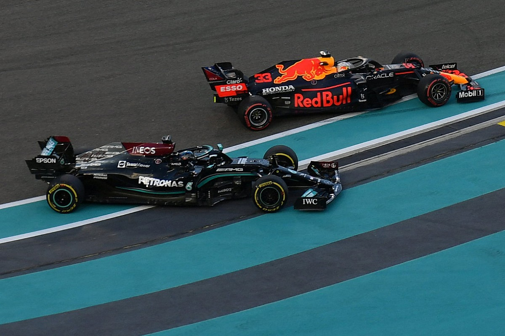
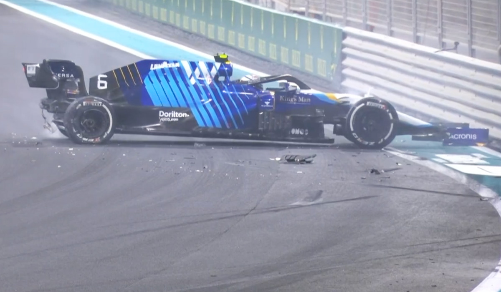
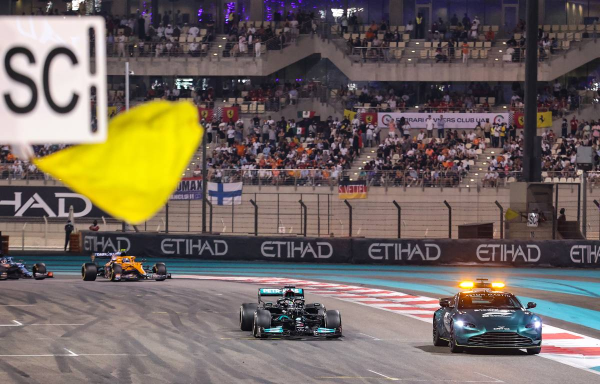
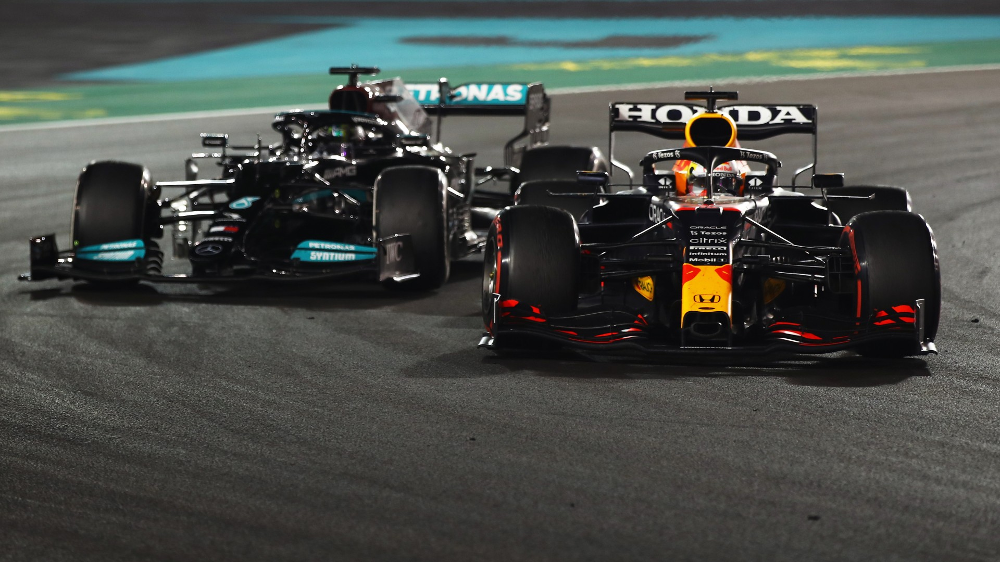

13 December 2021 - In what might be the most titanic and greatest title fight in the sport’s history, Max Verstappen beat Lewis Hamilton to the checkered flag and stole the 7-time world champion’s crown in a dramatic last lap shootout. At 24 years old, Verstappen becomes the Netherland’s first ever driver’s champion and joins a special club of drivers who won the championship under the age of 25, which includes Fernando Alonso, Hamilton himself, and the previous Red Bull world champion, Sebastian Vettel.
Heading into Abu Dhabi, the two challengers were level on points, a feat that had not been seen for 71 years. Verstappen beat Hamilton convincingly in qualifying on Saturday, beating the Brit who had medium compound tires on by 4 tenths on his soft compound tires. However, despite having the softer compound tyres on, it was Hamilton that got the jump on him and led after the first turn.
There was controversy a few turns later when the Mercedes driver pushed the Red Bull off the track after the latter made a late lunge at the end of the back straight, which the stewards saw no need to investigate. Many people, including the commentators, were appalled by this decision, but the race went on. It was Hamilton leading the race, slowly gaining over second place Verstappen.
Come lap 13, the Dutchman pitted for a new set of tires. One lap later, the Mercedes came in. This meant that it was now Max Verstappen’s teammate, Sergio Perez, in the lead of the race, and it was his mission to hold off Hamilton at all costs. The Mexican driver did exactly that, brilliantly defending against the Brit and making Verstappen gain 7 seconds on Hamilton.
Still however, Hamilton had the pace advantage. He once again built up a gap and had a comfortable margin against Verstappen. It looked set to finish this way, but when the virtual safety car came out for Alfa Romeo’s Antonio Giovinazzi, Red Bull was able to pit Max once more with a fresh set of tires while Mercedes instructed Hamilton to stay out. With 20 laps to go, there was a gap of 18 seconds. It meant that the Red Bull driver had to do 20 qualifying laps in a row just to have a chance.
It looked like the end for Verstappen. Despite being on much older tires, Hamilton judged his old set beautifully in the closing stages of the race. Red Bull team principal Christian Horner spoke to Sky Sports from the pit wall with 10 laps to go, saying that they “need a miracle.” And sure enough, they got it. With just a few laps left, Nicholas Latifi crashed his Williams into the barriers and triggered the safety car.
With nothing to lose, Verstappen pitted for a third and final time, putting on a set of new soft tires while Hamilton once again stayed out, with his team not wanting to risk having the Brit battle wheel-to-wheel with the Dutchman. Prior to the final race, there were multiple controversial incidents between the two drivers in Silverstone, Monza, Interlagos, and Jeddah.
Then came the big decision that will likely be talked about for years to come: race director Michael Masi initially ruled that lapped cars would not be able to overtake the safety car, giving Hamilton the advantage as Verstappen would have to overtake lapped cars in order to catch up to the leader with one lap to go. But out of nowhere, it was decided that those five lapped cars between Hamilton and Verstappen—and only those fiverlapped cars—were to be waved through.
This decision, which some saw as the sport valuing entertainment over real racing, set up for a last lap shootout in the last race of the season. The Dutchman made his move in turn 5, diving down the inside and snatching the championship crown. One lap decided one of the closest title fights in history, similar to Brazil 2008 when a 23 year old Hamilton in his second season of F1 overtook Timo Glock for 5th place in the last corner of the last lap of the last race in order to beat Brazilian Felipe Massa.
“The whole race I kept fighting and then that opportunity in the last lap. It is incredible. It is insane. These guys (fans in the stands), my team and, of course, at home as well they deserve it. I love them so much and I really, really enjoy working with them since 2016 but this year has been incredible. Finally a bit of luck for me," said Verstappen.
“All the things come back through your mind throughout all the years you spent together, traveling for that goal… and everything comes together in the last lap. Insane, these people, my whole team, my family, my friends, the people… who want to push me to where I am today. They’re all here - most of them are here. It’s just insane, I lost my voice, but yes. I don’t know, it just sounds amazing, honestly.”
“Lewis is an amazing driver, an amazing competitor, he really made it really hard for us and everybody loves to see that. Of course the two teams run against each other and we have tough times but I think that’s part of the sport, it’s emotion, everyone wants to win. It could have gone either way today but for sure next year we’ll try again, come back, and hopefully do it all over again."
See also: Race Highlights | 2021 Abu Dhabi Grand Prix & Race Highlights | 2008 Brazilian Grand Prix